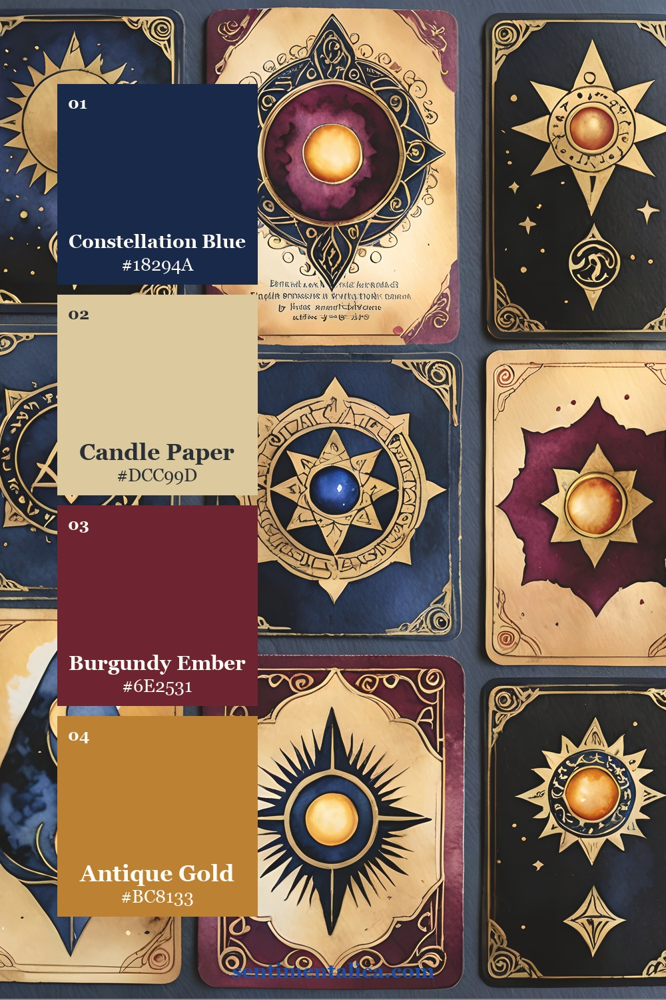

Dark academia works best when darkness is used as structure, not as a blanket. If every layer is navy, brown, or black, the page loses depth. The Firefly Glow printable image pack solves that problem with luminous vellum, amber light, celestial blue, old leather, and smoky wood tones. These three listing-derived palettes show how to keep a moody journal readable and warm.
Palette one: midnight at the writing desk

Build the page with Candle Paper first. Add Old Walnut as the middle value, then divide the darkest work between Ember Brown and Midnight Ink. Navy beside brown creates more atmosphere than either color can create alone. Use it for celestial pages, old-library pockets, secret-letter spreads, or a travel notebook imagined after dusk.

Palette two: the illuminated library

This palette is ideal when you want dark academia without an overly dark finished journal. Moonlit Ivory and Aged Vellum should occupy most of the spread. Let Library Leather frame the focal image, and place Lantern Gold where real light would naturally fall: near a candle, star, window, or gilded label.
For believable glow, do not scatter amber evenly. Cluster it around one focal area and leave the opposite corner quieter.

Palette three: constellation and ember

Choose this version for the richest contrast. Constellation Blue creates the night; Ember Shadow supplies the old-book warmth; Smoked Cedar softens the transition; and Firefly Amber becomes the tiny source of energy. A useful ratio is 45% pale or neutral paper, 25% blue, 20% brown, and no more than 10% amber.

A four-step dark-page check
- Squint at the spread and confirm that one pale area is still visible.
- Make the focal image the highest-contrast point.
- Repeat the amber accent only two or three times.
- Add journaling space before adding more decoration.
The Firefly Glow pages already combine celestial and antique-library motifs, so you can make a dramatic page without collecting unrelated supplies. Use the palette infographics as print-side references, then choose only the elements that support your chosen light source and story.